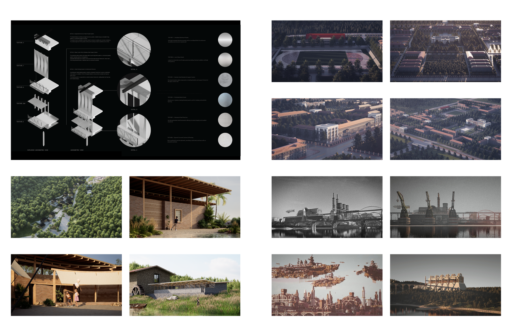
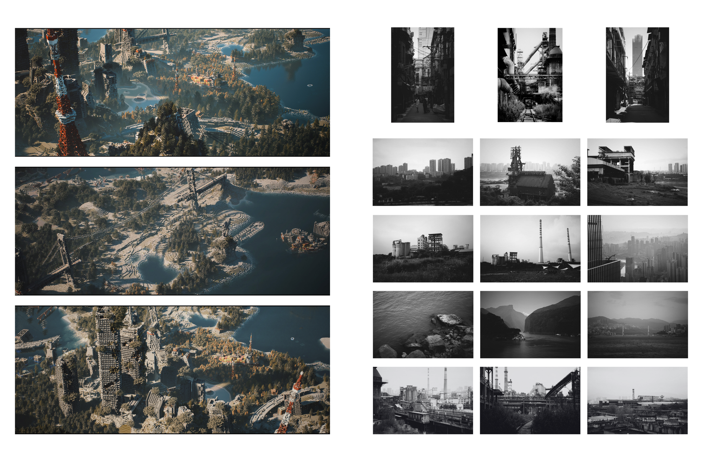

A set of smaller studies that sit alongside the main projects — representation experiments, diagrammatic studies, and documentation that test ideas about drawing, landscape, and industrial heritage outside the frame of a single studio brief.
一组与主线项目并行的小研究——表现实验、图解研究与记录，在单一课程命题之外，测试关于绘图、景观与工业遗产的想法。

